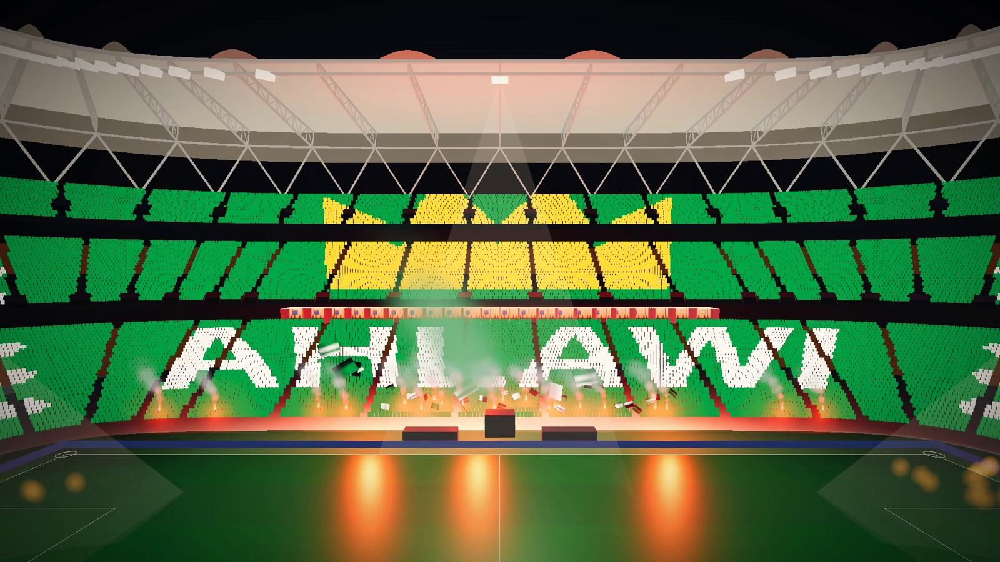
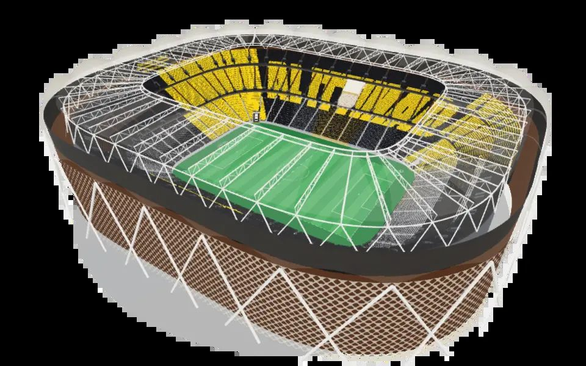
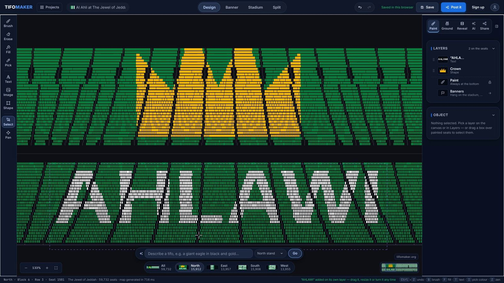
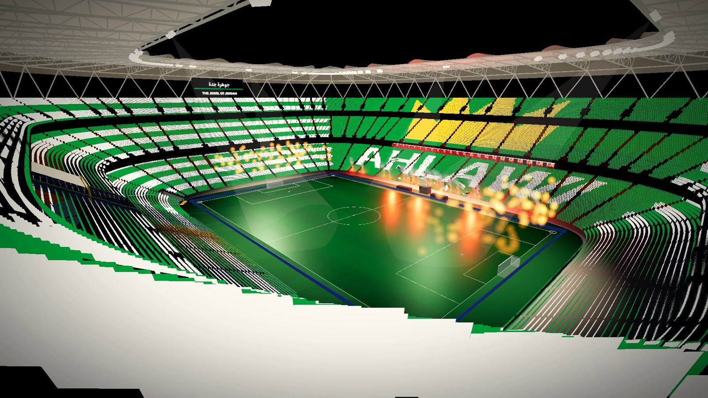
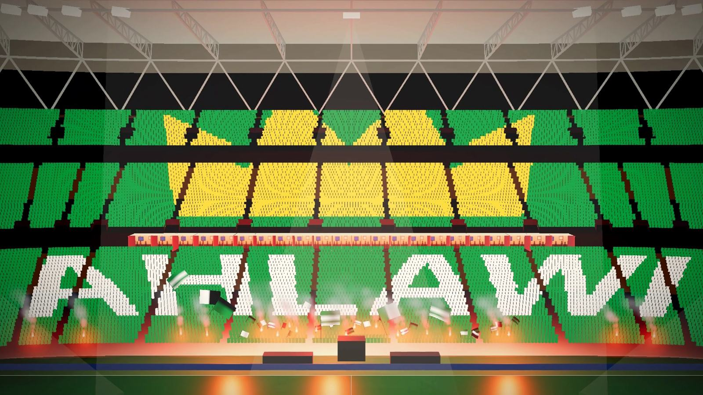
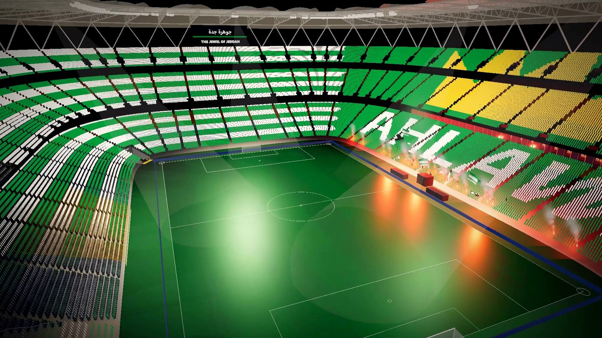
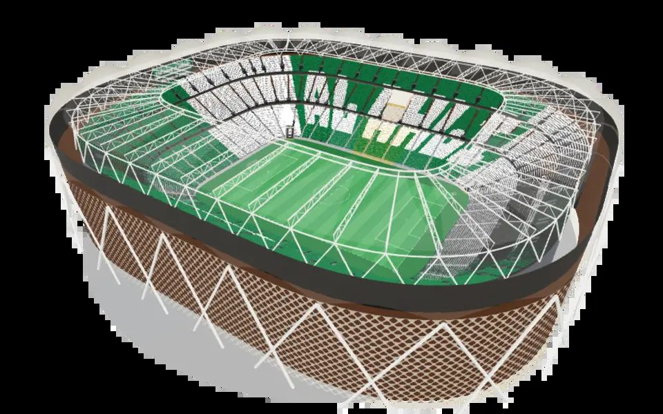
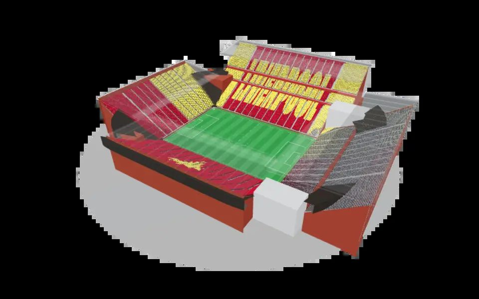
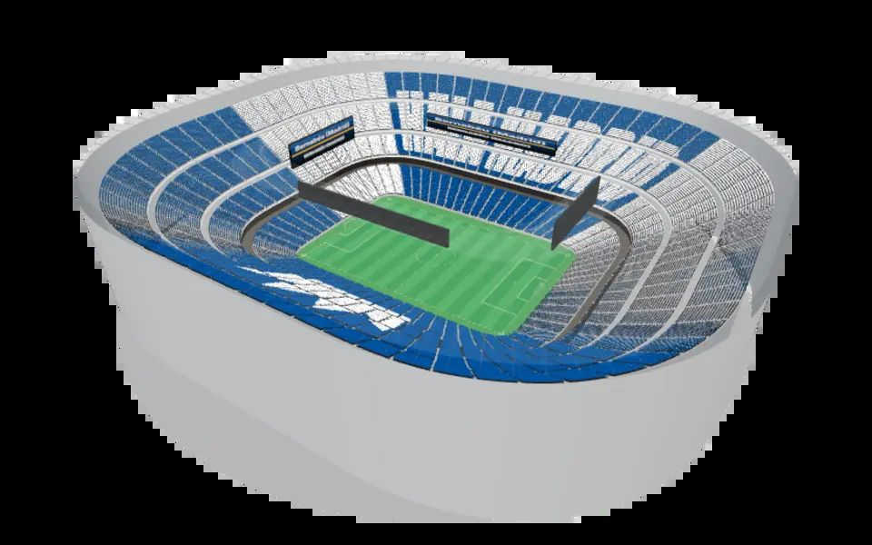
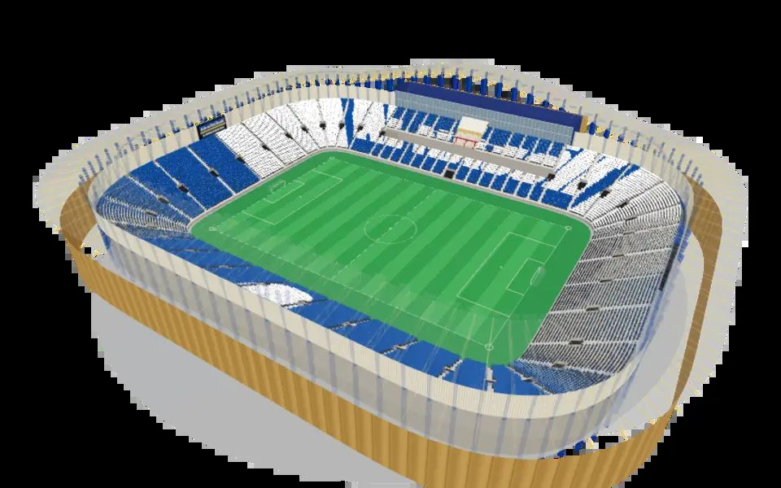

<title>TifoMaker Media Kit</title>
<meta name="claude:viewport-fit-sides" content="cover">
<link rel="preconnect" href="https://fonts.googleapis.com">
<link rel="stylesheet" href="https://fonts.googleapis.com/css2?family=Changa:wght@500;700;800&family=Inter:wght@400;500;600&family=Almarai:wght@400;700;800&family=JetBrains+Mono:wght@500&display=swap">
<style>
/* Layout: a match-day programme. Dark stadium ground, one lime flare moment (the card-stunt wordmark), sections labelled in stadium language. Single dark look by choice. */
:root{
  --night:#070B14; --night-2:#0F172A; --night-3:#161E31; --line:#243049;
  --text:#E8EEF8; --muted:#97A3BA; --blue:#1C6FE0; --blue-ink:#7FB0FF; --flare:#D9F000; --on-flare:#0B1120;
  --f-display:"Changa","Arial Narrow",system-ui,sans-serif;
  --f-body:"Inter",system-ui,-apple-system,"Segoe UI",sans-serif;
  --f-ar:"Almarai","Geeza Pro","Segoe UI",sans-serif;
  --f-mono:"JetBrains Mono",ui-monospace,Menlo,monospace;
  color-scheme:dark;
}
*{box-sizing:border-box}
body{background:var(--night);color:var(--text);font:16px/1.6 var(--f-body);margin:0}
.wrap{max-width:1120px;margin:0 auto;padding-left:max(16px,env(safe-area-inset-left,0px));padding-right:max(16px,env(safe-area-inset-right,0px))}
.ar{font-family:var(--f-ar);direction:rtl;text-align:left}
h1,h2,h3{font-family:var(--f-display);line-height:1.05;margin:0;text-wrap:balance}
p{margin:0}
a{color:var(--blue-ink)}
:focus-visible{outline:2px solid var(--flare);outline-offset:3px}
.eyebrow{font:500 12px/1 var(--f-mono);letter-spacing:.14em;text-transform:uppercase;color:var(--muted);display:flex;gap:10px;align-items:center;flex-wrap:wrap}
.eyebrow b{color:var(--flare);font-weight:500}
section{padding-block:clamp(56px,9vw,112px);border-top:1px solid var(--line)}
.sec-head{display:grid;gap:14px;margin-bottom:clamp(28px,5vw,48px);max-width:760px}
.sec-head h2{font-size:clamp(32px,5.4vw,56px);font-weight:800;letter-spacing:-.01em}
.sec-head .ar{font-size:clamp(18px,2.4vw,24px);color:var(--muted);font-weight:700}
.lede{color:var(--muted);font-size:18px;max-width:62ch}

/* hero */
.hero{position:relative;overflow:hidden;border-top:0;padding-block:0}
.hero-media{position:absolute;inset:0}
.hero-media img{width:100%;height:100%;object-fit:cover;object-position:50% 40%;filter:saturate(1.05)}
.hero-media::after{content:"";position:absolute;inset:0;background:linear-gradient(180deg,rgba(7,11,20,.55) 0%,rgba(7,11,20,.35) 35%,rgba(7,11,20,.92) 78%,var(--night) 100%)}
.hero .wrap{position:relative;padding-block:clamp(28px,5vw,48px) clamp(40px,7vw,72px);display:grid;gap:clamp(24px,4vw,40px)}
.topbar{display:flex;justify-content:space-between;align-items:center;gap:12px;flex-wrap:wrap}
.wordmark{font:800 22px/1 var(--f-display);letter-spacing:.02em}
.wordmark b{color:var(--blue-ink)}
.stunt{width:100%;max-width:980px;aspect-ratio:980/220;display:block;margin-top:clamp(40px,10vw,120px)}
.hero h1{font-size:clamp(40px,7.5vw,88px);font-weight:800;letter-spacing:-.015em;max-width:14ch}
.hero h1 em{font-style:normal;color:var(--flare)}
.hero .ar-head{font:800 clamp(26px,4.4vw,48px)/1.2 var(--f-ar);color:var(--text);opacity:.9}
.hero .lede{color:#C9D3E5}
.pill{display:inline-flex;align-items:center;gap:8px;border:1px solid var(--line);background:rgba(15,23,42,.7);border-radius:999px;padding:8px 14px;font:500 13px/1 var(--f-mono);color:var(--text)}
.pill i{width:8px;height:8px;border-radius:50%;background:var(--flare);display:inline-block}

/* facts */
.facts{display:grid;grid-template-columns:repeat(4,minmax(0,1fr));gap:1px;background:var(--line);border:1px solid var(--line);border-radius:16px;overflow:hidden}
.fact{background:var(--night-2);padding:22px 20px;display:grid;gap:6px;align-content:start}
.fact .n{font:800 clamp(36px,5vw,54px)/1 var(--f-display);font-variant-numeric:tabular-nums}
.fact .n small{font-size:.45em;color:var(--muted);margin-inline-start:4px}
.fact .l{color:var(--muted);font-size:14px;line-height:1.45}
.leagues{display:flex;flex-wrap:wrap;gap:8px;margin-top:20px}
.leagues span{border:1px solid var(--line);border-radius:999px;padding:6px 12px;font-size:13px;color:#C9D3E5}

/* steps */
.steps{display:grid;grid-template-columns:repeat(4,minmax(0,1fr));gap:16px}
.step{display:grid;gap:12px;align-content:start}
.step figure{margin:0;aspect-ratio:4/3;border-radius:12px;overflow:hidden;border:1px solid var(--line);background:var(--night-3)}
.step figure img{width:100%;height:100%;object-fit:cover}
.step .k{font:500 12px/1 var(--f-mono);color:var(--flare);letter-spacing:.12em}
.step h3{font-size:22px;font-weight:700}
.step p{color:var(--muted);font-size:15px}

/* gallery */
.gallery{display:grid;grid-template-columns:repeat(6,minmax(0,1fr));grid-auto-rows:clamp(120px,16vw,190px);gap:10px}
.gallery figure{margin:0;position:relative;border-radius:12px;overflow:hidden;background:#000;border:1px solid var(--line)}
.gallery img{width:100%;height:100%;object-fit:cover}
.gallery figcaption{position:absolute;inset:auto 0 0 0;padding:28px 12px 10px;font:500 11px/1.3 var(--f-mono);letter-spacing:.06em;text-transform:uppercase;background:linear-gradient(transparent,rgba(0,0,0,.85))}
.g-a{grid-column:span 4;grid-row:span 2}.g-b{grid-column:span 2;grid-row:span 2}
.g-c,.g-d,.g-e{grid-column:span 2}
.gallery .contain img{object-fit:contain;padding:6px}

/* audience */
.aud{display:grid;grid-template-columns:repeat(3,minmax(0,1fr));gap:16px}
.card{background:var(--night-2);border:1px solid var(--line);border-radius:16px;padding:24px;display:grid;gap:14px;align-content:start}
.meter{height:10px;border-radius:999px;background:var(--night-3);overflow:hidden;position:relative}
.meter span{position:absolute;inset:0 auto 0 0;background:var(--blue);border-radius:999px}
.meter span.range{background:linear-gradient(90deg,var(--blue) 0 var(--lo),rgba(28,111,224,.45) var(--lo) 100%)}
.big{font:800 40px/1 var(--f-display);font-variant-numeric:tabular-nums}
.card p{color:var(--muted);font-size:15px}
.src{font:500 11px/1.4 var(--f-mono);color:#6E7A92;letter-spacing:.04em}

/* channels */
.channels{display:grid;grid-template-columns:repeat(3,minmax(0,1fr));gap:16px}
.ch{display:grid;gap:10px;padding:24px;border-radius:16px;border:1px solid var(--line);background:var(--night-2);align-content:start}
.ch .h{display:flex;justify-content:space-between;align-items:baseline;gap:8px;flex-wrap:wrap}
.ch h3{font-size:26px}
.ch .handle{font:500 13px/1 var(--f-mono);color:var(--blue-ink);text-decoration:none}
.ch .role{font-weight:600}
.ch p{color:var(--muted);font-size:15px}
.ch ul{margin:0;padding-inline-start:18px;color:#C9D3E5;font-size:14px;display:grid;gap:4px}

/* work with us */
.offers{display:grid;grid-template-columns:repeat(3,minmax(0,1fr));gap:16px}
.offer{padding:24px;border-radius:16px;background:var(--night-2);border:1px solid var(--line);display:grid;gap:10px;align-content:start}
.offer h3{font-size:22px}
.offer p,.offer li{color:var(--muted);font-size:15px}
.offer ul{margin:0;padding-inline-start:18px;display:grid;gap:4px}
.contact{margin-top:28px;display:flex;flex-wrap:wrap;gap:16px;align-items:center;justify-content:space-between;padding:28px;border-radius:16px;background:var(--flare);color:var(--on-flare)}
.contact h3{font-size:clamp(26px,4vw,36px)}
.contact .addr{font:500 18px/1 var(--f-mono);user-select:all}
.btn{appearance:none;border:0;border-radius:999px;padding:12px 18px;font:600 15px/1 var(--f-body);cursor:pointer;background:var(--on-flare);color:var(--flare);min-height:44px}
.contact .row{display:flex;gap:12px;align-items:center;flex-wrap:wrap}

/* brand */
.brand{display:grid;grid-template-columns:1.2fr 1fr;gap:16px}
.logo-tile{border-radius:16px;border:1px solid var(--line);display:grid;place-items:center;min-height:220px;padding:24px}
.logo-tile.dark{background:var(--night-2)}
.logo-tile.light{background:#F4F7FC;color:#0B1120}
.logo-tile .wordmark{font-size:clamp(40px,7vw,72px)}
.logo-tile.light .wordmark b{color:var(--blue)}
.logos{display:grid;gap:16px}
.swatches{display:grid;grid-template-columns:repeat(4,minmax(0,1fr));gap:10px}
.sw{border-radius:12px;border:1px solid var(--line);overflow:hidden;background:var(--night-2)}
.sw div{height:72px}
.sw p{padding:10px;font:500 11px/1.4 var(--f-mono)}
.sw p span{display:block;color:var(--muted)}
.type{display:grid;gap:12px}
.type .t{padding:16px;border:1px solid var(--line);border-radius:12px;background:var(--night-2);display:flex;justify-content:space-between;gap:12px;align-items:baseline;flex-wrap:wrap}
.type .t span{font:500 11px/1 var(--f-mono);color:var(--muted)}
.rules{display:grid;grid-template-columns:1fr 1fr;gap:16px;margin-top:16px}
.rules ul{margin:0;padding-inline-start:18px;color:#C9D3E5;font-size:15px;display:grid;gap:6px}
.rules h3{font-size:18px;margin-bottom:10px}
footer{border-top:1px solid var(--line);padding-block:32px;color:var(--muted);font-size:14px}
footer .wrap{display:flex;justify-content:space-between;gap:12px;flex-wrap:wrap}

@media (max-width:900px){
  .facts{grid-template-columns:repeat(2,minmax(0,1fr))}
  .steps{grid-template-columns:repeat(2,minmax(0,1fr))}
  .aud,.channels,.offers{grid-template-columns:1fr}
  .brand{grid-template-columns:1fr}
  .gallery{grid-template-columns:repeat(2,minmax(0,1fr));grid-auto-rows:150px}
  .g-a{grid-column:span 2;grid-row:span 2}.g-b{grid-column:span 2;grid-row:span 2}
  .g-c,.g-d{grid-column:span 1}.g-e{grid-column:span 2}
}
@media (max-width:520px){
  .steps{grid-template-columns:1fr}
  .swatches{grid-template-columns:repeat(2,minmax(0,1fr))}
  .rules{grid-template-columns:1fr}
}
</style>

<header class="hero">
  <div class="hero-media"></div>
  <div class="wrap">
    <div class="topbar">
      <span class="wordmark">TIFO<b>MAKER</b></span>
      <span class="pill"><i></i>Media kit · November 2026</span>
    </div>
    <canvas class="stunt" id="stunt" width="980" height="220" role="img" aria-label="The word TIFOMAKER spelled out in stadium seats, flipping from navy to lime"></canvas>
    <h1>Every seat is a <em>pixel</em>.</h1>
    <p class="ar-head ar">كل كرسي بكسل.</p>
    <p class="lede">TifoMaker lets any fan design a full-stand tifo in their club's real ground, seat by seat, then watch it go up in 3D on a match night before a single card is printed. Free in the browser on a computer, in Arabic and English.</p>
  </div>
</header>

<main>
  <section id="numbers">
    <div class="wrap">
      <div class="sec-head">
        <div class="eyebrow"><b>Section A</b> · The ground</div>
        <h2>Real grounds. Real seats.</h2>
        <p class="ar">ملاعب حقيقية، كراسي حقيقية</p>
        <p class="lede">Every ground is built from photographs and ticketing seat maps: the real stairways, vomitories and block names, so the tifo a fan draws is the one their stand can actually hold up.</p>
      </div>
      <div class="facts">
        <div class="fact"><div class="n">147</div><div class="l">real grounds to design in, from Kingdom Arena to Anfield</div></div>
        <div class="fact"><div class="n">7</div><div class="l">leagues covered, plus national-team grounds</div></div>
        <div class="fact"><div class="n">60k<small>seats</small></div><div class="l">in one design, every seat its own colour</div></div>
        <div class="fact"><div class="n">2</div><div class="l">full languages. Arabic is first class, not a translation layer</div></div>
      </div>
      <div class="leagues" aria-label="Leagues">
        <span>Roshn Saudi League</span><span>Premier League</span><span>LaLiga</span><span>Ligue 1</span><span>Botola Pro</span><span>Algerian Ligue 1</span><span>Iraq Stars League</span>
      </div>
    </div>
  </section>

  <section id="how">
    <div class="wrap">
      <div class="sec-head">
        <div class="eyebrow"><b>Section B</b> · Kick-off to final whistle</div>
        <h2>From an idea in the group chat to the stand.</h2>
        <p class="ar">من فكرة بالقروب إلى المدرج</p>
      </div>
      <div class="steps">
        <div class="step">
          <figure></figure>
          <span class="k">STEP 1</span><h3>Pick the club and the ground</h3>
          <p>The real stadium loads with its real blocks, named the way the tickets name them.</p>
        </div>
        <div class="step">
          <figure></figure>
          <span class="k">STEP 2</span><h3>Design it seat by seat</h3>
          <p>Paint, add lettering and crests, or describe the idea and let the AI draft it.</p>
        </div>
        <div class="step">
          <figure></figure>
          <span class="k">STEP 3</span><h3>Watch it go up on Match Day</h3>
          <p>Floodlights, flares and a crowd in 3D, from any seat or camera angle.</p>
        </div>
        <div class="step">
          <figure></figure>
          <span class="k">STEP 4</span><h3>Hand every fan their card</h3>
          <p>Card counts per colour, steward sheets per block, and a seat finder for the day.</p>
        </div>
      </div>
    </div>
  </section>

  <section id="gallery">
    <div class="wrap">
      <div class="sec-head">
        <div class="eyebrow"><b>Section C</b> · Made in TifoMaker</div>
        <h2>The stands, as fans draw them.</h2>
        <p class="ar">المدرجات مثل ما يرسمها الجمهور</p>
      </div>
      <div class="gallery">
        <figure class="g-a"><figcaption>Match Day · full bowl</figcaption></figure>
        <figure class="g-b contain"><figcaption>Prince Abdullah Al-Faisal · Jeddah</figcaption></figure>
        <figure class="g-c contain"><figcaption>Anfield · Liverpool</figcaption></figure>
        <figure class="g-d contain"><figcaption>Bernabéu · Madrid</figcaption></figure>
        <figure class="g-e contain"><figcaption>Al-Awwal Park · Riyadh</figcaption></figure>
      </div>
    </div>
  </section>

  <section id="audience">
    <div class="wrap">
      <div class="sec-head">
        <div class="eyebrow"><b>Section D</b> · Who is in the stand</div>
        <h2>Gulf football fans, on their phones.</h2>
        <p class="ar">جمهور الكورة الخليجي، من جواله</p>
      </div>
      <div class="aud">
        <div class="card">
          <div class="big">63–80%</div>
          <div class="meter" aria-hidden="true"><span class="range" style="width:80%;--lo:78.75%"></span></div>
          <p>of visits come from phones, mostly from a link in a group chat or a post. Phones open the tifo in 3D; designing it happens on a computer.</p>
          <span class="src">Site analytics, autumn 2026 (weekly range)</span>
        </div>
        <div class="card">
          <div class="big">41–63%</div>
          <div class="meter" aria-hidden="true"><span class="range" style="width:63%;--lo:65%"></span></div>
          <p>of visits are in Arabic. Every page and every string ships in both languages.</p>
          <span class="src">Site analytics, autumn 2026 (weekly range)</span>
        </div>
        <div class="card">
          <div class="big">70%</div>
          <div class="meter" aria-hidden="true"><span style="width:70%"></span></div>
          <p>of the TikTok audience is in Saudi Arabia, with the UAE, Egypt, Qatar, Kuwait, Iraq and Algeria after it. Mostly men aged 18 to 34.</p>
          <span class="src">TikTok analytics, first video</span>
        </div>
      </div>
    </div>
  </section>

  <section id="channels">
    <div class="wrap">
      <div class="sec-head">
        <div class="eyebrow"><b>Section E</b> · Where to find us</div>
        <h2>Three channels, three jobs.</h2>
        <p class="ar">ثلاث منصات، لكل وحدة شغلها</p>
      </div>
      <div class="channels">
        <div class="ch">
          <div class="h"><h3>X</h3><a class="handle" href="https://x.com/tifomaker" rel="noopener">@tifomaker</a></div>
          <span class="role">The official word</span>
          <p>Announcements, new grounds, events and tifo nights, first and in both languages.</p>
          <ul><li>New grounds and features</li><li>Tifo of the Week from the community</li><li>Match-night reveals, credited to the groups who made them</li></ul>
        </div>
        <div class="ch">
          <div class="h"><h3>TikTok</h3><a class="handle" href="https://www.tiktok.com/@tifomaker" rel="noopener">@tifomaker</a></div>
          <span class="role">From the stands</span>
          <p>Short, loud, Arabic-first. Your club's tifo built in front of you.</p>
          <ul><li>Comment your club, we build its tifo</li><li>Derby duels: two tifos, one ground</li><li>Seat-by-seat builds</li></ul>
        </div>
        <div class="ch">
          <div class="h"><h3>YouTube</h3><a class="handle" href="https://www.youtube.com/@tifomaker" rel="noopener">@tifomaker</a></div>
          <span class="role">How it is done</span>
          <p>Full walkthroughs, ground flyovers and every Short in one place.</p>
          <ul><li>Design your stand's tifo, start to finish</li><li>Every Roshn League ground, block by block</li><li>Shorts from match week</li></ul>
        </div>
      </div>
    </div>
  </section>

  <section id="work">
    <div class="wrap">
      <div class="sec-head">
        <div class="eyebrow"><b>Section F</b> · Work with us</div>
        <h2>For clubs, supporter groups, creators and press.</h2>
        <p class="ar">للأندية والروابط وصنّاع المحتوى والإعلام</p>
      </div>
      <div class="offers">
        <div class="offer">
          <h3>Clubs and supporter groups</h3>
          <p>Plan the next display before buying a single card.</p>
          <ul><li>Card counts per colour and per block</li><li>Steward sheets and a seat finder</li><li>A 4K poster and a vertical reveal video</li><li>A proposal pack to take to the club</li></ul>
        </div>
        <div class="offer">
          <h3>Creators</h3>
          <p>Build your club's tifo on stream or in a video. We will help with the ground, the design file and a feature on our channels.</p>
        </div>
        <div class="offer">
          <h3>Press</h3>
          <p>Screenshots, renders and the story behind it: one developer measuring every ground from photographs, block by block. Arabic and English interviews.</p>
        </div>
      </div>
      <div class="contact">
        <div><h3>Talk to us</h3><p>Partnerships, press and club enquiries.</p></div>
        <div class="row"><span class="addr" id="addr">hello@tifomaker.org</span><button class="btn" id="copy" type="button">Copy address</button></div>
      </div>
    </div>
  </section>

  <section id="brand">
    <div class="wrap">
      <div class="sec-head">
        <div class="eyebrow"><b>Section G</b> · Brand</div>
        <h2>How we look.</h2>
        <p class="lede">TifoMaker belongs to every club's fans, so the brand stays neutral: night navy, one blue and a floodlight lime. Club colours only ever appear in a fan's own tifo.</p>
      </div>
      <div class="brand">
        <div class="logos">
          <div class="logo-tile dark"><span class="wordmark">TIFO<b>MAKER</b></span></div>
          <div class="logo-tile light"><span class="wordmark">TIFO<b>MAKER</b></span></div>
        </div>
        <div class="type">
          <div class="swatches">
            <div class="sw"><div style="background:#070B14"></div><p>Night<span>#070B14</span></p></div>
            <div class="sw"><div style="background:#0F172A"></div><p>Concourse<span>#0F172A</span></p></div>
            <div class="sw"><div style="background:#1C6FE0"></div><p>Blue<span>#1C6FE0</span></p></div>
            <div class="sw"><div style="background:#D9F000"></div><p>Floodlight<span>#D9F000</span></p></div>
          </div>
          <div class="t"><span>DISPLAY</span><strong style="font:800 28px/1 var(--f-display)">Changa</strong></div>
          <div class="t"><span>TEXT</span><strong style="font:600 20px/1 var(--f-body)">Inter</strong></div>
          <div class="t"><span>ARABIC</span><strong class="ar" style="font:800 22px/1.2 var(--f-ar)">ألماراي Almarai</strong></div>
        </div>
      </div>
      <div class="rules">
        <div><h3>Do</h3><ul><li>Set the wordmark in one line, TIFO in white and MAKER in blue</li><li>Use real renders from the app, on dark grounds</li><li>Write numbers in Western digits in both languages</li></ul></div>
        <div><h3>Don't</h3><ul><li>Put club crests or club colours on the TifoMaker brand</li><li>Stretch, outline or recolour the wordmark</li><li>Show a render as a real match photo</li></ul></div>
      </div>
    </div>
  </section>
</main>

<footer>
  <div class="wrap"><span>tifomaker.org</span><span class="ar">صمّم تيفو ناديك في ملعبه الحقيقي</span></div>
</footer>

<script>
(function(){
  var btn=document.getElementById('copy'),addr=document.getElementById('addr');
  btn.addEventListener('click',function(){
    var t=addr.textContent;
    var ok=function(){btn.textContent='Copied';setTimeout(function(){btn.textContent='Copy address'},1600)};
    var fallback=function(){var r=document.createRange();r.selectNodeContents(addr);var s=getSelection();s.removeAllRanges();s.addRange(r);btn.textContent='Selected, press copy'};
    try{navigator.clipboard.writeText(t).then(ok,fallback)}catch(e){fallback()}
  });

  // Card-stunt wordmark: seats flip from navy to lime, column by column.
  var c=document.getElementById('stunt'),x=c.getContext('2d');
  var W=c.width,H=c.height;
  var off=document.createElement('canvas');off.width=W;off.height=H;
  var o=off.getContext('2d');
  function draw(start){
    o.clearRect(0,0,W,H);o.fillStyle='#fff';o.textBaseline='middle';o.textAlign='center';
    o.font='800 190px Changa, "Arial Narrow", sans-serif';
    o.fillText('TIFOMAKER',W/2,H/2+10,W-20);
    var img=o.getImageData(0,0,W,H).data,step=10,seats=[];
    for(var yy=step/2;yy<H;yy+=step)for(var xx=step/2;xx<W;xx+=step){
      var on=img[((yy|0)*W+(xx|0))*4+3]>120;
      var maker=on&&xx>W*0.43;
      seats.push({x:xx,y:yy,on:on,maker:maker,d:xx/W*0.75+Math.random()*0.18});
    }
    var reduce=matchMedia('(prefers-reduced-motion: reduce)').matches;
    var t0=null;
    function frame(ts){
      if(t0===null)t0=ts;var p=reduce?2:(ts-t0)/1500;
      x.clearRect(0,0,W,H);
      for(var i=0;i<seats.length;i++){
        var s=seats[i],k=Math.max(0,Math.min(1,(p-s.d)*4));
        var col;
        if(!s.on)col='rgba(36,48,73,0.55)';
        else if(k<1)col='rgba(51,65,92,0.9)';
        else col=s.maker?'#D9F000':'#E8EEF8';
        var h=step-3, sc=s.on&&k>0&&k<1?Math.abs(Math.cos(k*Math.PI)):1;
        x.fillStyle=(s.on&&k>=0.5)?(s.maker?'#D9F000':'#E8EEF8'):col;
        x.fillRect(s.x-(step-3)/2,s.y-h*sc/2,step-3,Math.max(1,h*sc));
      }
      if(p<2)requestAnimationFrame(frame);
    }
    requestAnimationFrame(frame);
  }
  if(document.fonts&&document.fonts.load){document.fonts.load('800 190px Changa').then(draw,draw)}else draw();
})();
</script>
